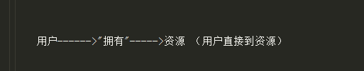
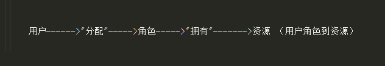
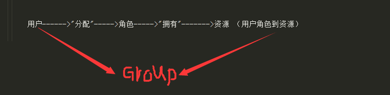

权限管理的设计理念有很多，像ABAC（基于属性的访问控制）、ACL（基于资源的访问控制）、RBAC（基于资源的访问控制）、GBAC（基于组的访问控制）等等，它们各有利弊，现在最常用的是RBAC，
下面说的就是RBAC。
1.基于资源的权限控制——ACL (资源就是，例如一张图片,一段视频都可以成为资源)

2.基于角色的权限控制——RBAC （角色像开发部门,运营部门等等）

3.引入”组“概念的权限控制——RBAC （这个好理解 和上学时候分小组一个概念）

在上边的分析中，得出了一种包含用户、角色、资源、组等几个主体的权限管理，它们之间的关联都是多对多的(一个用户可以在多个组，一个组可以有多个用户)
RBAC权限管理模型在加入”组“概念后，在实现继承功能的基础上，更加灵活的适应了需求的变更。
它主要的配置为：用户-角色配置、用户-用户组配置，角色-资源配置，用户组-资源配置，
这些配置对应到数据库中就是两个主表之间的第三张表，里边存储的是用户操作的记录，服务于主表以供查询。
RBAC设计表：用户表，角色表，权限表，用户角色表，角色权限表。(个人设计，有更好的可以自己设计)